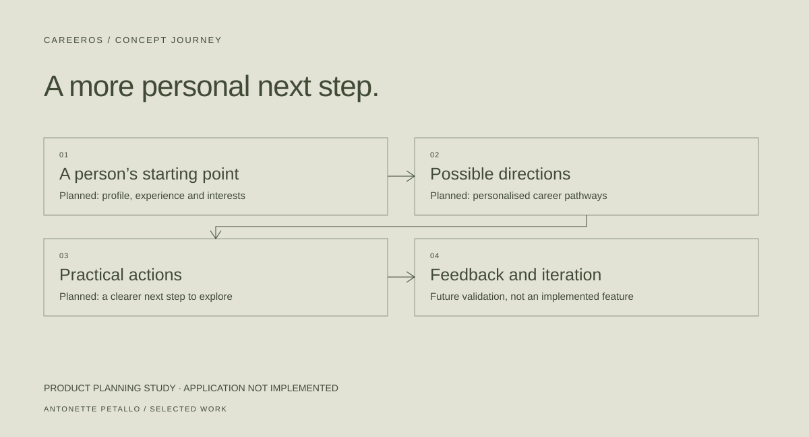

04 / PRODUCT DESIGN STUDY
ANTONETTE PETALLOCareerOS.
An early product study exploring personalised career pathways. Planning work, not a launched application.
- Context & contribution
- Product exploration · AI-assisted planning
- Tools & methods
- Requirements, user journeys, architecture planning
- Current status
- Concept and documentation · application not implemented

Make career direction less abstract.
Career advice can be broad when the next step needs to be personal. CareerOS explores a platform that could connect a person’s background, interests and goals to possible pathways and practical actions.
My work at this stage is product exploration: describing the problem, considering user journeys and planning the technical pieces. AI assists the planning process.
Plan the foundation before the intelligence.
Profiles, authentication and personalised pathways are part of the intended product. They are requirements, not completed features.
The central design question is how to make suggestions understandable and useful without implying that an AI system can guarantee an employment outcome. Clear inputs, explicit assumptions and user control belong in that conversation from the start.
Keep ambition separate from evidence.
The current project record is a set of planning documents. The web application, authentication, data schema, AI features and application tests are not implemented in that repository.
There is no public demo, verified usage or release result to report. Private planning material stays private; this page provides only a high-level description of the idea.
The next useful proof.
The next step is a small, testable foundation that can establish one coherent profile-to-pathway flow. It should be evaluated before adding more features or making stronger claims.
Why include an early study? Product judgment includes deciding what to test next | and being precise about what has not been built yet.
Evidence reviewed · October 28, 2026
High-level concept only;
no private documents published.